Plantilla del FC Barcelona
Temporada 2024/2025

Marc-André ter Stegen
Portero
Edad: 31 años
Nacionalidad: Alemania
Debut: 23/08/2014 vs Elche
Títulos con el Barça: 5 Ligas, 1 Champions, 5 Copas del Rey
Datos curiosos: 4º portero con más partidos en la historia del club
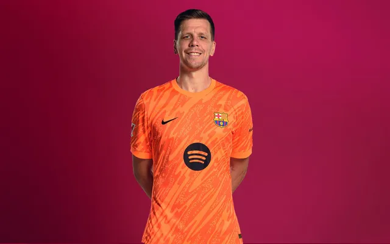
Wojciech Szczęsny
Portero
Edad: 34 años
Nacionalidad: Polonia
Debut: 04/01/2025 vs Barbastro
Títulos con el Barça:1 SuperCopa de España
Datos curiosos: 22º portero con más partidos en la historia del club
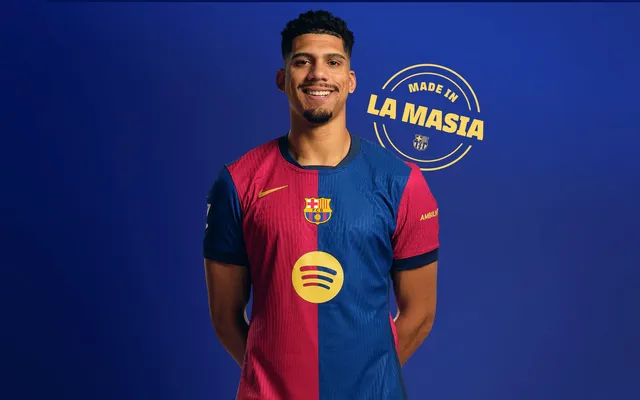
Ronald Araújo
Defensa central
Edad: 24 años
Nacionalidad: Uruguay
Debut: 06/10/2019 vs Sevilla
Títulos con el Barça: 1 Liga, 1 Copa del Rey
Datos curiosos: Uno de los defensas más rápidos del equipo (34.3 km/h)
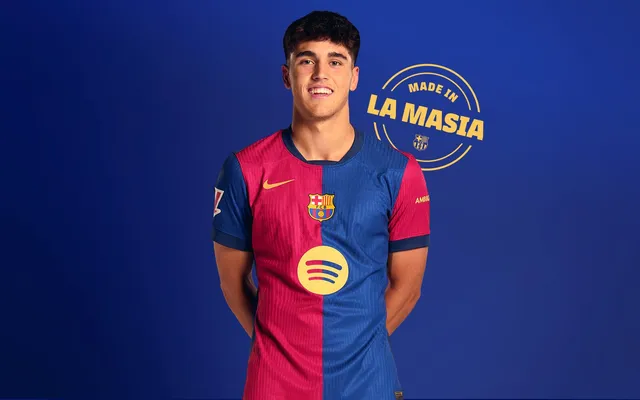
Pau Cubarsí
Defensa central
Edad: 18 años
Nacionalidad: Español
Debut: 22/01/2024 vs Unionistas de Salamanca
Títulos con el Barça: 1 SuperCopa de España
Datos curiosos: Surgió directamente de La Masia, debutando en el primer equipo con muy poca experiencia en categorías superiores, pero mostrando una madurez y solidez defensiva impropias de su edad.
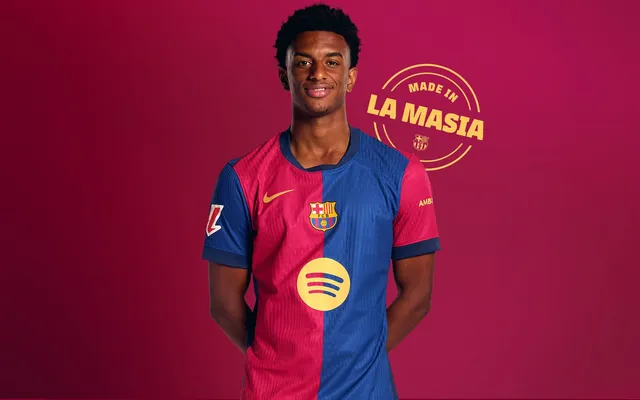
Alejandro Balde
Lateral Izquierdo
Edad: 21 años
Nacionalidad: Español
Debut: 14/09/2021 vs Bayern Múnich
Títulos con el Barça: 1 SuperCopa de España, 1 LaLiga
Datos curiosos: Es conocido por su gran velocidad y capacidad para incorporarse al ataque desde la banda izquierda, siendo un jugador clave en la transición defensa-ataque del equipo.
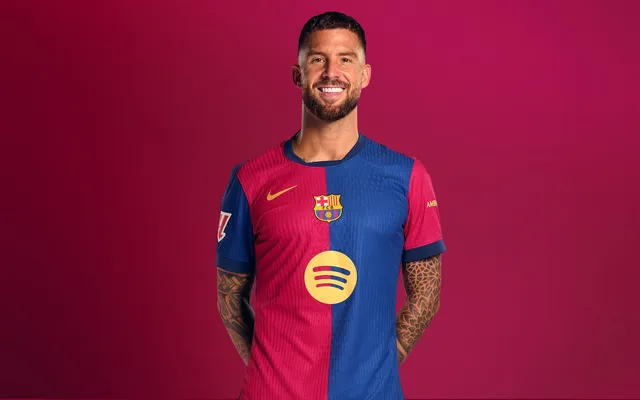
Iñigo Martínez
Defensa Central
Edad: 33 años
Nacionalidad: Español
Debut: 26/09/2023 vs RCD Mallorca
Títulos con el Barça: 1 SuperCopa de España, 1 LaLiga
Datos curiosos: Es un defensor con mucha experiencia en el fútbol español, destacando por su liderazgo, juego aéreo y capacidad para sacar el balón jugado desde la defensa.
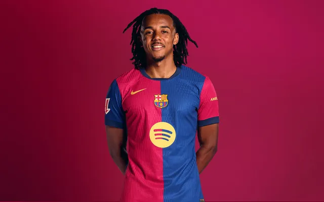
Jules Koundé
Lateral Derecho
Edad: 25 años
Nacionalidad: Francia
Debut: 10/09/2022 vs Cádiz
Títulos con el Barça: 1 Liga, 1 Supercopa
Datos curiosos: Jugó como lateral derecho en el Mundial 2022 con Francia
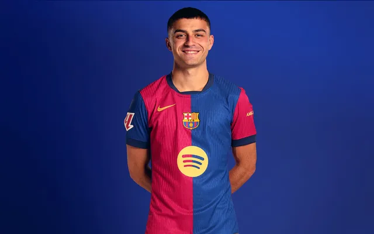
Pedri González
Centrocampista
Edad: 21 años
Nacionalidad: España
Debut: 27/09/2020 vs Villarreal
Títulos con el Barça: 1 Liga, 1 Copa del Rey
Datos curiosos: Jugador más joven en alcanzar 100 partidos con el Barça en el siglo XXI
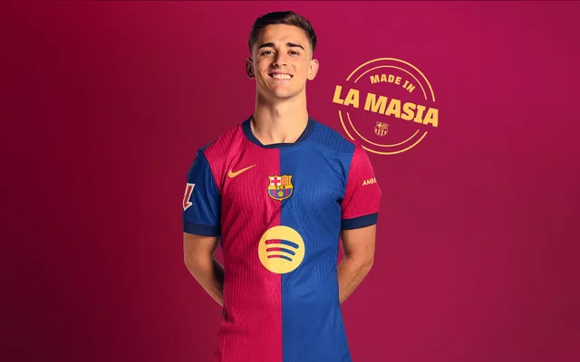
Pablo Páez Gavira
Centrocampista
Edad: 20 años
Nacionalidad: España
Debut: 29/08/2021 vs Getafe CF
Títulos con el Barça: 1 Liga, 1 Copa del Rey
Datos curiosos: A pesar de su juventud, se consolidó rápidamente como un jugador fundamental en el mediocampo del Barcelona y de la selección española, destacando por su intensidad, garra y calidad técnica.
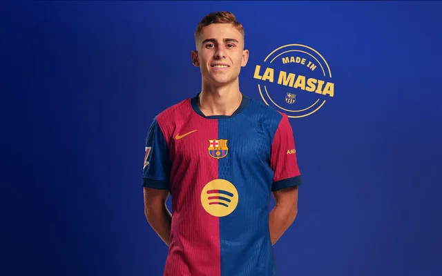
Fermín López Marín
Centrocampista
Edad: 22 años
Nacionalidad: España
Debut: 27/08/2023 vs Villarreal CF
Títulos con el Barça:
Datos curiosos: Al igual que Cubarsí, es otro talento surgido de La Masia que ha irrumpido en el primer equipo, mostrando una gran llegada al área y capacidad para marcar goles.
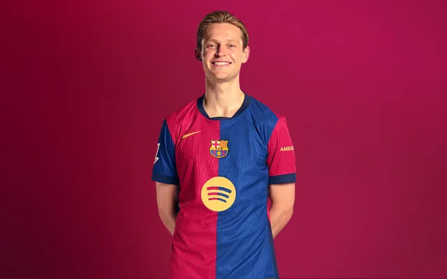
Frenkie de Jong
Centrocampista
Edad: 27 años
Nacionalidad: Paises Bajos
Debut: 16/08/2019 vs Athletic ClubF
Títulos con el Barça: 1 Copa del Rey, 1 LaLiga, 2 SuperCopa de España
Datos curiosos: Llegó al Barcelona procedente del Ajax, donde fue una pieza clave en el equipo que llegó a las semifinales de la UEFA Champions League en la temporada 2018-2019. Es conocido por su visión de juego, capacidad de pase y habilidad para romper líneas con el balón.
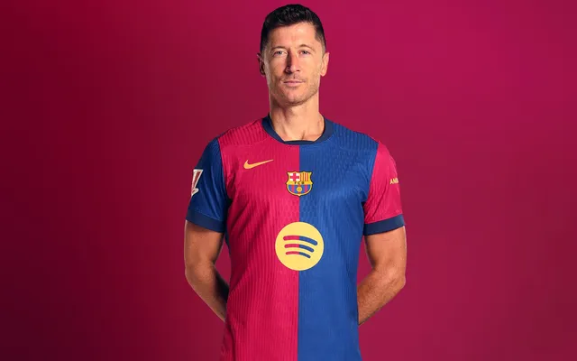
Robert Lewandowski
Delantero centro
Edad: 35 años
Nacionalidad: Polonia
Debut: 13/08/2022 vs Rayo Vallecano
Títulos con el Barça: 1 Liga, 1 Supercopa
Datos curiosos: Máximo goleador de la Liga 2022/23 con 23 goles
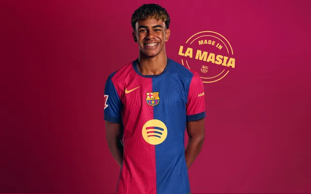
Lamine Yamal
Extremo derecho
Edad: 16 años
Nacionalidad: España
Debut: 29/04/2023 vs Betis (15 años)
Títulos con el Barça: 1 Liga
Datos curiosos: Jugador más joven en debutar y marcar con el Barça
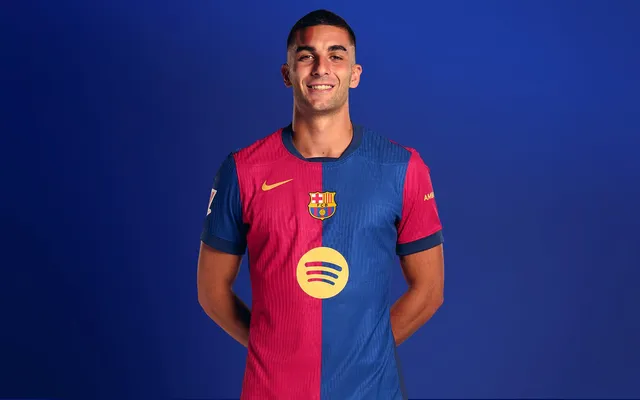
Ferran Torres
Extremo
Edad: 25 años
Nacionalidad: España
Debut: 12/01/2022 vs Real Madrid
Títulos con el Barça: 1 Liga
Datos curiosos: Llegó al Barcelona en el mercado de invierno de la temporada 2021-2022 procedente del Manchester City, buscando un mayor protagonismo en el ataque.
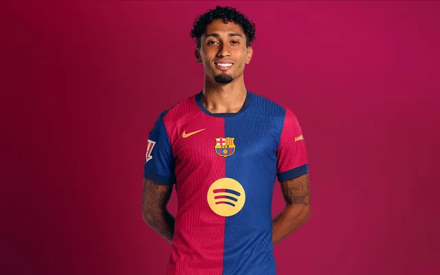
Raphael Dias Belloli
Extremo
Edad: 28 años
Nacionalidad: Brasil
Debut: 13/08/2022 vs Rayo Vallecano
Títulos con el Barça: 1 Liga, 1 SuperCopa Española
Datos curiosos: Antes de llegar al Barcelona, destacó en el Leeds United de la Premier League por su habilidad regateadora y capacidad goleadora.
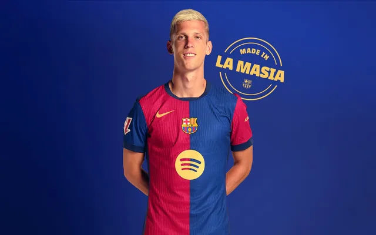
Dani Olmo
Extremo
Edad: 26 años
Nacionalidad: Español
Debut: 13/08/2022 vs Rayo Vallecano
Títulos con el Barça: 1 SuperCopa Española
Datos curiosos: Antes de llegar al Barcelona, destacó en el RB Leipzig.